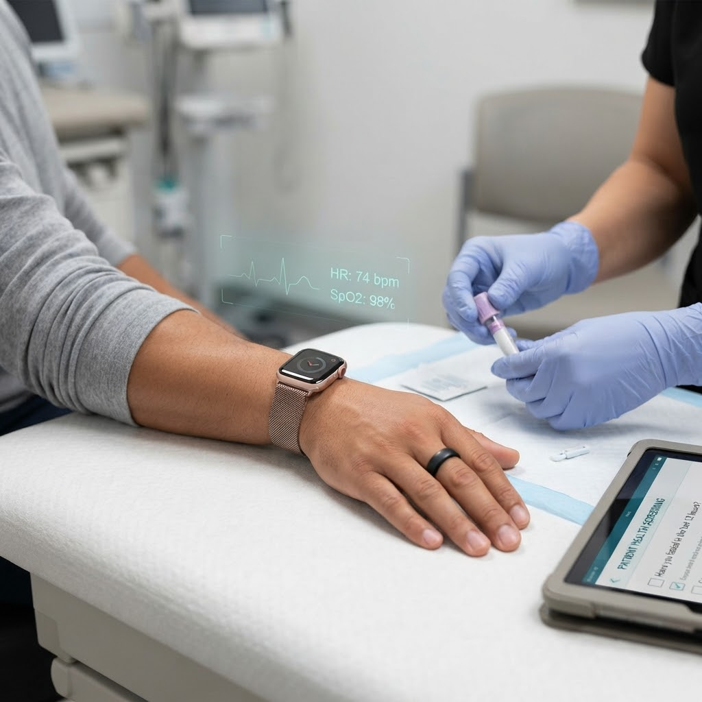
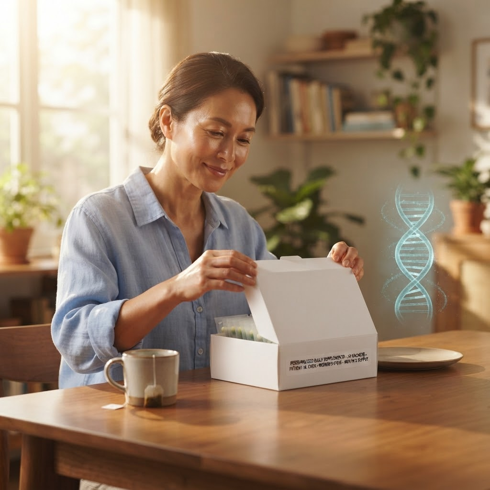

<title>Zuply 點運作</title>
<meta name="claude:viewport-fit-sides" content="cover">
<link rel="stylesheet" href="https://fonts.googleapis.com/css2?family=Noto+Sans+HK:wght@400;600;700&display=swap">
<style>
/* Layout: full-width alternating bands, each a centred stack of eyebrow, oversized headline, one paragraph, one visual. */
:root {
  --bg: #ffffff;
  --alt: #f5f5f7;
  --fg: #1d1d1f;
  --fg-2: #6e6e73;
  --line: #d2d2d7;
  --accent: #0d9488;
  --accent-soft: #d5f2ee;
  --nav: rgba(255, 255, 255, .78);
  --font: -apple-system, BlinkMacSystemFont, "SF Pro Display", "PingFang HK", "PingFang TC", "Noto Sans HK", "Microsoft JhengHei", sans-serif;
  --h: clamp(34px, 8.6vw, 88px);
  --p: clamp(18px, 2.3vw, 26px);

  /* Motion: four images only (scan, pulse, data, holo). Every duration and easing is named here and used by name. */
  --scan: #5eead4;                       /* scan light, particles, glow */
  --trace: #0d9488;                      /* drawn lines on the page surface; lifts to --scan on dark */
  --glow-lo: rgba(94, 234, 212, .15);
  --glow-hi: rgba(94, 234, 212, .35);
  --grid: rgba(94, 234, 212, .06);       /* blueprint lines behind the scenes */
  --ease: cubic-bezier(.16, 1, .3, 1);   /* ease-out-expo: entrances and state changes */
  --ease-pulse: ease-in-out;             /* heartbeat and breathing */
  --ease-scan: linear;                   /* constant-speed sweeps and dash flow */
  --dur-s: .2s;        /* micro */
  --dur-m: .45s;       /* state */
  --dur-l: .7s;        /* entrance */
  --dur-amb: 6s;       /* ambient loops */
  --dur-beat: 1.1s;    /* heartbeat */
  --dur-flash: .3s;    /* line and divider flash */
  --dur-typing: .4s;   /* typing dots before a message */
  --dur-gap: .5s;      /* pause after a message */
  --dur-msg: .5s;      /* a chat message forms */
  --dur-scan: .6s;     /* one sweep across a card */
  --dur-settle: .6s;   /* verdict pulse */
  --dur-draw: 2s;      /* ECG draws in; verdict glow fades out */
  --dur-ripple: 2.4s;  /* sonar wave */
  --dur-online: .4s;   /* gap between nodes coming online */
  --dur-count: 1.4s;   /* scan-analysis count-up */
  --dur-travel: 3s;    /* version dot */
  --dur-breathe: 4s;   /* latest-version glow */
  --dur-beam: 2.2s;    /* hero scan beam */
  --stagger: .1s;      /* reveal stagger, two levels at most */
  --stagger-holo: .3s; /* headline phrases */
  --stagger-cell: .03s;/* packs lighting up */
  --amb-x: 1;          /* ambient slow-down factor */
}
@media (prefers-color-scheme: dark) {
  :root:not([data-theme="light"]) {
    --bg: #000000; --alt: #161617; --fg: #f5f5f7; --fg-2: #a1a1a6; --line: #424245;
    --accent: #2dd4bf; --accent-soft: #0f3b37; --nav: rgba(22, 22, 23, .78); --trace: #5eead4; color-scheme: dark;
  }
}
:root[data-theme="dark"] {
  --bg: #000000; --alt: #161617; --fg: #f5f5f7; --fg-2: #a1a1a6; --line: #424245;
  --accent: #2dd4bf; --accent-soft: #0f3b37; --nav: rgba(22, 22, 23, .78); --trace: #5eead4; color-scheme: dark;
}

/* phones and touch: ambient motion runs at half the rate */
@media (max-width: 640px), (pointer: coarse) { :root { --amb-x: 2; } }

html { scroll-behavior: smooth; }
body { background: var(--bg); color: var(--fg); font-family: var(--font); -webkit-font-smoothing: antialiased; }
body::before { content: ""; position: fixed; inset: 0 0 auto; height: env(safe-area-inset-top, 0px); z-index: 10; background: var(--bg); }
a { color: inherit; text-decoration: none; }
a:focus-visible { outline: 2px solid var(--accent); outline-offset: 4px; border-radius: 4px; }

.wrap {
  max-width: 1040px; margin-inline: auto;
  padding-left: max(16px, env(safe-area-inset-left, 0px));
  padding-right: max(16px, env(safe-area-inset-right, 0px));
}

/* nav */
.nav { position: sticky; top: env(safe-area-inset-top, 0px); z-index: 9; background: var(--nav);
  -webkit-backdrop-filter: saturate(180%) blur(20px); backdrop-filter: saturate(180%) blur(20px);
  border-bottom: 1px solid color-mix(in srgb, var(--line) 50%, transparent); }
.nav .wrap { display: flex; align-items: center; justify-content: space-between; gap: 16px; height: 48px; }
.brand { font-weight: 700; font-size: 18px; letter-spacing: -.01em; }
.nav ul { display: flex; gap: clamp(12px, 3vw, 32px); margin: 0; padding: 0; list-style: none; font-size: 13px; color: var(--fg-2); }
.nav li a { transition: color var(--dur-s) var(--ease); }
@media (hover: hover) { .nav li a:hover { color: var(--fg); } }

/* bands */
.band { text-align: center; }
.band.alt { background: var(--alt); }
.band .wrap { padding-block: clamp(72px, 12vw, 150px); display: flex; flex-direction: column; align-items: center; gap: clamp(16px, 2.2vw, 26px); }
.hero .wrap { padding-block: clamp(64px, 10vw, 120px); }
.eyebrow { margin: 0; font-size: clamp(15px, 1.8vw, 21px); font-weight: 600; color: var(--accent); }
h1, h2 { margin: 0; font-size: var(--h); line-height: 1.12; font-weight: 700; letter-spacing: -.015em; text-wrap: balance; }
h1 span, h2 span { display: inline-block; }
.lede { margin: 0; max-width: 26em; font-size: var(--p); line-height: 1.5; font-weight: 600; color: var(--fg-2); text-wrap: pretty; }
.lede strong { color: var(--fg); font-weight: 600; display: inline-block; }
.visual { margin-top: clamp(28px, 5vw, 64px); width: 100%; display: flex; flex-direction: column; align-items: center; gap: 20px; }
.note { margin: 0; font-size: 12px; color: var(--fg-2); }

.steps { display: flex; flex-wrap: wrap; justify-content: center; gap: 10px; margin: clamp(12px, 2vw, 24px) 0 0; padding: 0; list-style: none; }
.steps a { display: block; padding: 9px 18px; border-radius: 999px; border: 1px solid var(--line); font-size: 15px; font-weight: 600;
  transition: transform var(--dur-s) var(--ease), border-color var(--dur-s) var(--ease), color var(--dur-s) var(--ease); }
@media (hover: hover) { .steps a:hover { border-color: var(--accent); color: var(--accent); } }
.steps b { color: var(--accent); font-weight: 600; margin-right: 6px; font-variant-numeric: tabular-nums; }

/* hero motion. holo: the headline forms phrase by phrase. pulse: an ECG trace draws in, then one beat runs along it. scan: a beam points down. */
.hero h1 span { animation: holo var(--dur-l) var(--ease) both; }
.hero h1 span + span { animation-delay: var(--stagger-holo); }
@keyframes holo { from { opacity: 0; filter: blur(8px); } }
.ecg { display: block; overflow: visible; }
.hero .ecg { width: min(100%, 520px); height: auto; }
.ecg path { fill: none; stroke: var(--trace); stroke-linecap: round; stroke-linejoin: round; }
.ecg-base { stroke-width: 2; opacity: .4; stroke-dasharray: 100; }
.ecg-beat { stroke-width: 3; stroke-dasharray: 12 88; opacity: 0; filter: drop-shadow(0 0 3px var(--glow-hi)); }
.hero .ecg-base, .ecg.in .ecg-base { animation: ecgDraw var(--dur-draw) var(--ease-scan) both; }
.hero .ecg-beat, .ecg.in .ecg-beat { animation: ecgOn var(--dur-s) var(--ease) var(--dur-draw) forwards, ecgFlow var(--dur-beat) var(--ease-scan) var(--dur-draw) infinite; }
@keyframes ecgDraw { from { stroke-dashoffset: 100; } }
@keyframes ecgOn { to { opacity: 1; } }
@keyframes ecgFlow { from { stroke-dashoffset: 100; } to { stroke-dashoffset: 0; } }
.beam { position: relative; display: block; width: 2px; height: 56px; border-radius: 1px; overflow: hidden; background: color-mix(in srgb, var(--line) 55%, transparent); transition: opacity var(--dur-flash) var(--ease); }
.beam::before { content: ""; position: absolute; inset: 0; background: linear-gradient(transparent, var(--trace)); transform: translateY(-100%); animation: beam calc(var(--dur-beam) * var(--amb-x)) var(--ease-scan) infinite; }
.beam.off { opacity: 0; pointer-events: none; }
@keyframes beam { to { transform: translateY(100%); } }

/* scenes: one photo per step inside an instrument panel; the canvas above it draws the live overlay.
   The blueprint grid shows only if a photo fails to load. */
.shot-fig { margin: 0; width: 100%; display: flex; flex-direction: column; align-items: center; gap: 8px; }
.scene { position: relative; width: 100%; max-width: 760px; aspect-ratio: 4 / 3; border-radius: 28px; overflow: hidden; background-color: #000000;
  background-image: linear-gradient(var(--grid) 1px, transparent 1px), linear-gradient(90deg, var(--grid) 1px, transparent 1px); background-size: 38px 38px; background-position: center; }
.scene .shot { position: absolute; inset: 0; width: 100%; height: 100%; object-fit: cover; }
.scene::before { content: ""; position: absolute; inset: 0; z-index: 1; pointer-events: none; background: linear-gradient(rgba(0, 0, 0, .22), rgba(0, 0, 0, 0) 28%, rgba(0, 0, 0, 0) 62%, rgba(0, 0, 0, .3)); }
.scene canvas { position: relative; z-index: 2; display: block; width: 100%; height: 100%; }
.visual { gap: clamp(24px, 4vw, 44px); }

/* 1 group chat */
.room { width: min(100%, 560px); background: var(--bg); border-radius: 28px; overflow: hidden; text-align: left; display: flex; flex-direction: column;
  border: 1px solid color-mix(in srgb, var(--line) 50%, transparent); box-shadow: 0 0 0 1px var(--glow-lo), 0 28px 60px -32px var(--glow-hi); }
.room-head { display: flex; align-items: center; gap: 12px; padding: 14px 18px; border-bottom: 1px solid color-mix(in srgb, var(--line) 50%, transparent); }
.room-head .stack { display: flex; }
.room-head .stack .av { margin-left: -10px; box-shadow: 0 0 0 2px var(--bg); }
.room-head .stack .av:first-child { margin-left: 0; }
.room-head b { display: block; font-size: 16px; font-weight: 600; }
.room-head small { font-size: 12px; color: var(--fg-2); }
.log { height: 400px; overflow-y: auto; padding: 16px; display: flex; flex-direction: column; gap: 10px; font-size: 15px; line-height: 1.45; }
.sys { align-self: center; margin: 0; font-size: 12px; color: var(--fg-2); text-align: center; }
.msg { display: flex; gap: 8px; align-items: flex-end; max-width: 88%; }
.msg.me { align-self: flex-end; }
/* holo: each message forms out of blur; a thin seam of light flashes above it as it lands */
.msg { position: relative; animation: msgIn var(--dur-msg) var(--ease) both; }
.msg.is-typing { animation-duration: var(--dur-s); }
@keyframes msgIn { from { opacity: 0; filter: blur(6px); } }
.msg:not(.is-typing)::before { content: ""; position: absolute; left: 0; right: 0; top: -6px; height: 1px; background: linear-gradient(90deg, transparent, var(--scan), transparent); opacity: 0; animation: seam var(--dur-m) var(--ease) both; }
@keyframes seam { 40% { opacity: .9; } }
/* scan: while the shared data is being read, a line sweeps the bubble and a percentage counts up */
.msg.me .bb { position: relative; overflow: hidden; }
.pct { display: inline-block; min-width: 3.2em; text-align: right; font-variant-numeric: tabular-nums; }
.msg.scanning .bb::after { content: ""; position: absolute; inset: 0; background: linear-gradient(90deg, transparent 44%, color-mix(in srgb, var(--bg) 70%, transparent) 50%, transparent 56%); transform: translateX(-100%); animation: sweep var(--dur-scan) var(--ease-scan) infinite; }
@keyframes sweep { to { transform: translateX(100%); } }
.av { flex: none; width: 30px; height: 30px; border-radius: 50%; color: #ffffff; display: grid; place-items: center; font-size: 13px; font-weight: 600; background: hsl(var(--hue, 174) 42% 40%); }
.nm { font-size: 11px; color: var(--fg-2); margin: 0 0 3px 12px; }
.bb { background: var(--alt); padding: 9px 14px; border-radius: 18px; }
.msg.me .bb { background: var(--accent); color: var(--bg); font-weight: 600; }
.typing { display: flex; gap: 4px; padding: 14px; }
.typing i { width: 6px; height: 6px; border-radius: 50%; background: var(--fg-2); animation: blink var(--dur-beat) var(--ease-pulse) infinite; }
.typing i:nth-child(2) { animation-delay: .15s; } .typing i:nth-child(3) { animation-delay: .3s; }
@keyframes blink { 0%, 60%, 100% { opacity: .25; } 30% { opacity: 1; } }
.verdict { border: 1px solid var(--accent); background: var(--accent-soft); border-radius: 18px; padding: 16px 18px; }
/* pulse: the verdict lands with one soft beat, its rim glow fades out, then it is still */
.verdict { position: relative; animation: settle var(--dur-settle) var(--ease-pulse) both; }
.verdict::after { content: ""; position: absolute; inset: -1px; border-radius: inherit; pointer-events: none; box-shadow: 0 0 0 1px var(--glow-hi), 0 0 22px var(--glow-hi); opacity: 0; animation: afterglow var(--dur-draw) var(--ease) both; }
@keyframes settle { 0% { opacity: 0; } 30% { opacity: 1; } 50% { transform: scale(1.02); } }
@keyframes afterglow { from { opacity: 1; } }
.verdict h3 { margin: 0 0 8px; font-size: 17px; color: var(--accent); }
.verdict ol { margin: 0; padding-left: 1.2em; display: grid; gap: 4px; }
.verdict p { margin: 10px 0 0; font-size: 13px; font-weight: 600; }
.dock { border-top: 1px solid color-mix(in srgb, var(--line) 50%, transparent); padding: 14px 16px; display: flex; flex-direction: column; gap: 12px; }
.chips { display: flex; flex-wrap: wrap; gap: 8px; max-height: 128px; overflow-y: auto; padding: 2px; }
.chip { font: inherit; font-size: 13px; font-weight: 600; padding: 7px 12px; border-radius: 999px; border: 1px solid var(--line); background: transparent; color: var(--fg); cursor: pointer; }
.chip[aria-pressed="true"] { background: var(--accent); border-color: var(--accent); color: var(--bg); }
.dock-row { display: flex; flex-wrap: wrap; gap: 10px; align-items: center; justify-content: space-between; }
.count { font-size: 13px; color: var(--fg-2); font-variant-numeric: tabular-nums; }
.btn { font: inherit; font-size: 15px; font-weight: 600; padding: 11px 20px; border-radius: 999px; border: 0; background: var(--accent); color: var(--bg); cursor: pointer; }
.btn.ghost { background: var(--alt); color: var(--fg); }
.btn:disabled { opacity: .4; cursor: default; }
.chip, .btn { transition: transform var(--dur-s) var(--ease), background-color var(--dur-s) var(--ease), border-color var(--dur-s) var(--ease), color var(--dur-s) var(--ease), opacity var(--dur-s) var(--ease); }
@media (hover: hover) { .steps a:hover, .chip:hover, .btn:not(:disabled):hover { transform: translateY(-2px); } }
.steps a:active, .chip:active, .btn:not(:disabled):active { transform: scale(.97); }
.chip:focus-visible, .btn:focus-visible { outline: 2px solid var(--accent); outline-offset: 2px; }

/* 2 data */
.sources { display: grid; grid-template-columns: repeat(5, 1fr); gap: 12px; width: 100%; margin: 0; padding: 0; list-style: none; }
.sources li { position: relative; overflow: hidden; background: var(--alt); border-radius: 22px; padding: 28px 8px 22px; display: flex; flex-direction: column; align-items: center; gap: 14px; font-size: 17px; font-weight: 600; min-width: 0; }
/* scan: one band of light crosses the card, the rim holds a teal glow for a moment, then lets go */
.sources li::before, .sources li::after { content: ""; position: absolute; inset: 0; pointer-events: none; }
.sources li::before { border-radius: inherit; box-shadow: inset 0 0 0 1px var(--glow-hi), inset 0 0 18px var(--glow-lo); opacity: 0; }
.sources li::after { background: linear-gradient(100deg, transparent 30%, var(--glow-hi) 50%, transparent 70%); transform: translateX(-100%); }
.sources li.scan::after { animation: sweep var(--dur-scan) var(--ease-scan) both; }
.sources li.scan::before { animation: rim calc(var(--dur-scan) + var(--dur-m)) var(--ease) both; }
@keyframes rim { 57% { opacity: 1; } }
.sources svg { width: 44px; height: 44px; stroke: var(--accent); fill: none; stroke-width: 1.6; stroke-linecap: round; stroke-linejoin: round; }
.soon { position: absolute; top: 10px; right: 10px; font-size: 11px; font-weight: 600; padding: 3px 8px; border-radius: 999px; background: var(--accent-soft); color: var(--accent); }
.pulse { width: 100%; height: auto; }   /* drawn and animated by the shared .ecg rules */
@media (max-width: 640px) {
  .sources { grid-template-columns: repeat(6, 1fr); }
  .sources li { grid-column: span 2; padding: 22px 6px 18px; font-size: 15px; }
  .sources li:nth-child(4) { grid-column: 2 / span 2; }
}

/* 3 pack */
.packrow { display: flex; flex-wrap: wrap; align-items: center; justify-content: center; gap: clamp(20px, 5vw, 56px); width: 100%; }
.pack { flex: none; width: min(100%, 280px); aspect-ratio: 5 / 7; border-radius: 18px; padding: 26px 24px; text-align: left; display: flex; flex-direction: column; justify-content: space-between;
  color: #ffffff; background: linear-gradient(160deg, #14b8a6, #0f766e 70%); box-shadow: 0 28px 60px -26px var(--glow-hi); position: relative; overflow: hidden; }
.pack::before { content: ""; position: absolute; inset: 14px 0 auto; border-top: 2px dashed rgba(255, 255, 255, .45); }
.pack small { font-size: 12px; letter-spacing: .14em; opacity: .85; margin-top: 12px; }
.pack .big { font-size: 34px; font-weight: 700; line-height: 1.15; }
.pack dl { margin: 0; display: grid; gap: 6px; font-size: 13px; }
.pack dl div { display: flex; justify-content: space-between; border-top: 1px solid rgba(255, 255, 255, .3); padding-top: 6px; }
.pack dt { opacity: .8; } .pack dd { margin: 0; font-weight: 600; }
.chat { width: min(100%, 320px); display: flex; flex-direction: column; gap: 10px; text-align: left; font-size: 16px; line-height: 1.45; }
.who { display: flex; align-items: center; gap: 8px; font-size: 13px; font-weight: 600; color: var(--fg-2); }
.who i { width: 8px; height: 8px; border-radius: 50%; background: var(--accent); }
.bubble { margin: 0; padding: 12px 16px; border-radius: 20px; background: var(--bg); max-width: 90%; }
.bubble.me { align-self: flex-end; background: var(--accent); color: var(--bg); }

.znrs { width: min(100%, 320px); background: var(--bg); border-radius: 22px; padding: 20px; display: flex; flex-direction: column; gap: 14px; text-align: left; }
.znrs .who { font-size: 15px; color: var(--fg); }
.znrs ul { margin: 0; padding: 0; list-style: none; }
.znrs li { display: flex; justify-content: space-between; gap: 12px; padding: 10px 0; border-top: 1px solid color-mix(in srgb, var(--line) 50%, transparent); font-size: 15px; font-weight: 600; }
.znrs li b { font-size: 12px; font-weight: 600; color: var(--accent); }
.znrs .out { background: var(--accent-soft); border-radius: 16px; padding: 14px 16px; display: grid; gap: 2px; }
.znrs .out small { font-size: 12px; font-weight: 600; color: var(--accent); }
.znrs .out strong { font-size: 22px; }
.znrs .out span { font-size: 13px; color: var(--fg-2); font-weight: 600; }
/* pulse: the ZNRS status light beats. holo: the four inputs read in one after another, once. */
.znrs .who i { position: relative; }
.znrs .who i::after { content: ""; position: absolute; inset: -5px; border-radius: 50%; background: var(--scan); opacity: 0; animation: beat var(--dur-beat) var(--ease-pulse) infinite; }
@keyframes beat { 0% { opacity: 0; transform: scale(.6); } 35% { opacity: .45; transform: scale(1); } 100% { opacity: 0; transform: scale(1.6); } }
.packrow.in .znrs li b { animation: holo var(--dur-m) var(--ease) both; animation-delay: calc(var(--dur-l) + var(--stagger) * var(--n, 0)); }
.znrs li:nth-child(2) { --n: 1; } .znrs li:nth-child(3) { --n: 2; } .znrs li:nth-child(4) { --n: 3; }

/* 4 evolution */
.evo { display: grid; grid-template-columns: repeat(3, 1fr); gap: 12px; width: 100%; }
/* data: a point of light runs the version line once, from v1.0 to the latest. pulse: the latest version breathes. */
.evo { position: relative; container-type: inline-size; --run: calc(66.667cqw + 8px); }
.evo::before, .evo::after { content: ""; position: absolute; top: -16px; height: 9px; pointer-events: none; }
.evo::before { left: calc(100% / 6 - 8.5px); right: calc(100% / 6 - 8.5px);
  background: radial-gradient(circle, var(--line) 0 2.5px, transparent 3px) 0 50% / 9px 9px no-repeat, radial-gradient(circle, var(--line) 0 2.5px, transparent 3px) 50% 50% / 9px 9px no-repeat,
    radial-gradient(circle, var(--line) 0 2.5px, transparent 3px) 100% 50% / 9px 9px no-repeat, linear-gradient(var(--line), var(--line)) 50% 50% / 100% 1px no-repeat; }
.evo::after { left: calc(100% * 5 / 6 - .5px); width: 9px; border-radius: 50%; background: var(--trace); box-shadow: 0 0 0 3px var(--glow-lo), 0 0 10px var(--glow-hi); }
.evo.in::after { animation: travel var(--dur-travel) var(--ease-scan) both; }
@keyframes travel { from { transform: translateX(calc(var(--run) * -1)); } }
.month { position: relative; }
.month:last-child::after { content: ""; position: absolute; inset: 0; border-radius: inherit; pointer-events: none; box-shadow: inset 0 0 0 1px var(--glow-hi), inset 0 0 22px var(--glow-lo); animation: breathe calc(var(--dur-breathe) * var(--amb-x)) var(--ease-pulse) infinite; }
@keyframes breathe { 0%, 100% { opacity: .6; } 50% { opacity: 1; } }
.month { background: var(--alt); border-radius: 22px; padding: 22px 20px 24px; text-align: left; display: flex; flex-direction: column; gap: 14px; min-width: 0; }
.month h3 { margin: 0; font-size: 15px; font-weight: 600; color: var(--fg-2); }
.month h3 b { display: block; font-size: 28px; color: var(--fg); font-weight: 700; }
.month h3 b { font-variant-numeric: tabular-nums; }
.month ul { margin: 0; padding: 0; list-style: none; display: grid; gap: 8px; }
.month li { display: flex; align-items: center; gap: 10px; font-size: 14px; font-weight: 600; padding: 8px 10px; border-radius: 12px; background: var(--bg); }
.month li::before { content: ""; flex: none; width: 26px; height: 12px; border-radius: 6px; background: linear-gradient(90deg, var(--line) 50%, color-mix(in srgb, var(--line) 45%, transparent) 50%); }
.month li.chg { color: var(--accent); }
.month li.chg::before { background: linear-gradient(90deg, var(--accent) 50%, var(--accent-soft) 50%); }
.month li.new::after { content: "新"; margin-left: auto; font-size: 11px; padding: 1px 7px; border-radius: 999px; background: var(--accent-soft); color: var(--accent); }
.diff { margin-top: auto; display: grid; gap: 6px; font-size: 13px; font-weight: 600; font-variant-numeric: tabular-nums; }
.diff small { font-size: 12px; font-weight: 400; color: var(--fg-2); }
.bar { position: relative; height: 8px; border-radius: 4px; background: color-mix(in srgb, var(--line) 55%, transparent); }
.bar::after { content: ""; position: absolute; left: 50%; top: -4px; bottom: -4px; width: 2px; background: var(--fg); }
.bar i { display: block; height: 100%; width: var(--w); border-radius: 4px; background: var(--accent); transform-origin: left; }
@media (max-width: 640px) {
  .evo { grid-template-columns: 1fr; --run: calc(100cqw - 9px); }
  .evo::before { left: 0; right: 0; }
  .evo::after { left: calc(100% - 9px); }
}

footer .wrap { padding-block: 28px; font-size: 12px; color: var(--fg-2); text-align: center; border-top: 1px solid var(--line); }

/* entrance (holo): once the observer is live it parks blocks still below the viewport; each then forms out of blur, once */
.rv-wait { opacity: 0; filter: blur(10px); transform: translateY(8px); }
.rv-in { transition: opacity var(--dur-l) var(--ease), filter var(--dur-l) var(--ease), transform var(--dur-l) var(--ease); }
.rv-in.d1 { transition-delay: var(--stagger); }
.rv-in.d2 { transition-delay: calc(var(--stagger) * 2); }
.in .bar i { animation: grow var(--dur-l) var(--dur-m) var(--ease) both; }
@keyframes grow { from { transform: scaleX(0); } }
/* reduced motion: nothing moves, and every base style above is already the finished state */
@media (prefers-reduced-motion: reduce) {
  html { scroll-behavior: auto; }
  *, *::before, *::after { animation: none !important; transition: none !important; }
}
</style>

<nav class="nav" aria-label="步驟">
  <div class="wrap">
    <a class="brand" href="#top">Zuply</a>
    <ul>
      <li><a href="#step-1">會診</a></li>
      <li><a href="#step-2">數據</a></li>
      <li><a href="#step-3">配方</a></li>
      <li><a href="#step-4">Evolution</a></li>
    </ul>
  </div>
</nav>

<header class="band hero" id="top">
  <div class="wrap">
    <p class="eyebrow">Zuply 點運作</p>
    <h1><span>四步，</span><span>由你開始。</span></h1>
    <svg class="ecg" viewBox="0 0 600 48" aria-hidden="true" focusable="false"><path class="ecg-base" pathLength="100" d="M0 30H116q6-7 12 0H140l4 5 6-30 6 37 5-12H172q9-10 18 0H266q6-7 12 0H290l4 5 6-30 6 37 5-12H322q9-10 18 0H416q6-7 12 0H440l4 5 6-30 6 37 5-12H472q9-10 18 0H600"/><path class="ecg-beat" pathLength="100" d="M0 30H116q6-7 12 0H140l4 5 6-30 6 37 5-12H172q9-10 18 0H266q6-7 12 0H290l4 5 6-30 6 37 5-12H322q9-10 18 0H416q6-7 12 0H440l4 5 6-30 6 37 5-12H472q9-10 18 0H600"/></svg>
    <ol class="steps">
      <li><a href="#step-1"><b>1</b>會診</a></li>
      <li><a href="#step-2"><b>2</b>數據</a></li>
      <li><a href="#step-3"><b>3</b>配方</a></li>
      <li><a href="#step-4"><b>4</b>Formula Evolution</a></li>
    </ol>
    <span class="beam" aria-hidden="true"></span>
  </div>
</header>


<main>
  <section class="band alt" id="step-1">
    <div class="wrap">
      <p class="eyebrow">Step 1 · 會診</p>
      <h2><span>成隊專科，</span><span>睇你一個。</span></h2>
      <p class="lede">幾十位專家圍住你轉，日日傾你嘅事。<strong>呢種待遇，出面俾唔到。</strong></p>
      <div class="visual">
        <figure class="shot-fig">
          <div class="scene"><canvas id="scene-1" role="img" aria-label="五位醫生同 AI 顯示屏圍住一位用戶會診"></canvas></div>
          <figcaption class="note">AI 生成示意圖</figcaption>
        </figure>
        <div class="room" id="room">
          <div class="room-head">
            <div class="stack" id="room-stack"></div>
            <div><b>你嘅會診群組</b><small id="room-sub"></small></div>
          </div>
          <div class="log" id="room-log" aria-live="polite"></div>
          <div class="dock" id="room-dock"></div>
        </div>
        <p class="note">示範內容，唔係醫療建議。</p>
      </div>
    </div>
  </section>

  <section class="band" id="step-2">
    <div class="wrap">
      <p class="eyebrow">Step 2 · 數據</p>
      <h2><span>身體講嘢，</span><span>我哋識聽。</span></h2>
      <p class="lede">傾偈、驗血、手錶、戒指（快嚟啦）、問卷。<strong>你嘅身體講咩，我哋聽到。</strong></p>
      <div class="visual">
        <figure class="shot-fig">
          <div class="scene"><canvas id="scene-2" role="img" aria-label="手腕上嘅手錶同戒指、驗血同問卷，數據由身體流出"></canvas></div>
          <figcaption class="note">AI 生成示意圖</figcaption>
        </figure>
        <ul class="sources">
          <li><svg viewBox="0 0 44 44" aria-hidden="true"><path d="M8 11h28a3 3 0 0 1 3 3v15a3 3 0 0 1-3 3H21l-8 6v-6H8a3 3 0 0 1-3-3V14a3 3 0 0 1 3-3z"/><path d="M14 19h16M14 25h10"/></svg>傾偈</li>
          <li><svg viewBox="0 0 44 44" aria-hidden="true"><path d="M22 5c6 8 11 14 11 21a11 11 0 0 1-22 0c0-7 5-13 11-21z"/><path d="M16 27a6 6 0 0 0 6 6"/></svg>驗血</li>
          <li><svg viewBox="0 0 44 44" aria-hidden="true"><rect x="12" y="11" width="20" height="22" rx="6"/><path d="M16 11l1-7h10l1 7M16 33l1 7h10l1-7M17 23h3l2-4 3 7 1-3h2"/></svg>手錶</li>
          <li><span class="soon">快嚟啦</span><svg viewBox="0 0 44 44" aria-hidden="true"><ellipse cx="22" cy="24" rx="14" ry="13"/><ellipse cx="22" cy="24" rx="10" ry="9"/><path d="M17 9l5-4 5 4"/></svg>戒指</li>
          <li><svg viewBox="0 0 44 44" aria-hidden="true"><rect x="9" y="8" width="26" height="31" rx="4"/><path d="M17 8V5h10v3M15 18l2 2 4-4M25 18h5M15 28l2 2 4-4M25 28h5"/></svg>問卷</li>
        </ul>
        <svg class="pulse ecg" viewBox="0 0 600 80" aria-hidden="true" focusable="false"><path class="ecg-base" pathLength="100" d="M0 40H170l12-8 10 8h22l10-30 14 60 12-42 8 12H390l12-8 10 8H600"/><path class="ecg-beat" pathLength="100" d="M0 40H170l12-8 10 8h22l10-30 14 60 12-42 8 12H390l12-8 10 8H600"/></svg>
      </div>
    </div>
  </section>

  <section class="band alt" id="step-3">
    <div class="wrap">
      <p class="eyebrow">Step 3 · 配方</p>
      <h2><span>每月一盒 30 包，</span><span>度身訂造。</span></h2>
      <p class="lede">配方跟人走，唔係人跟配方走。<strong>ZNRS 系統讀晒你嘅數據，逐粒計出你嗰盒配方。</strong></p>
      <div class="visual">
        <figure class="shot-fig">
          <div class="scene"><canvas id="scene-3" role="img" aria-label="ZNRS 系統計出每包 6 粒，逐包放入一盒 30 包"></canvas></div>
          <figcaption class="note">AI 生成示意圖</figcaption>
        </figure>
        <div class="packrow">
          <div class="pack" role="img" aria-label="寫上你名字嘅每月配方盒，一盒 30 包">
            <small>ZUPLY · 每月配方</small>
            <div class="big">為你<br>一個人配</div>
            <dl>
              <div><dt>屬於</dt><dd>你</dd></div>
              <div><dt>每月</dt><dd>一盒 30 包</dd></div>
              <div><dt>配方</dt><dd>ZNRS 系統計算</dd></div>
            </dl>
          </div>
          <div class="znrs" aria-label="ZNRS 系統運算示意">
            <div class="who"><i></i>ZNRS 系統</div>
            <ul>
              <li><span>會診裁決</span><b>已讀</b></li>
              <li><span>驗血報告</span><b>已讀</b></li>
              <li><span>穿戴設備數據</span><b>已讀</b></li>
              <li><span>問卷</span><b>已讀</b></li>
            </ul>
            <div class="out"><small>ZNRS 計出</small><strong>你嘅 6 粒配方</strong><span>× 30 包 · 每月一盒</span></div>
            <p class="note">運算示意。營養師覆核後出貨。</p>
          </div>
        </div>
      </div>
    </div>
  </section>

  <section class="band" id="step-4">
    <div class="wrap">
      <p class="eyebrow">Step 4 · Formula Evolution</p>
      <h2><span>你變，</span><span>配方跟住變。</span></h2>
      <p class="lede">人哋賣 supplement，我哋養 formula。<strong>身體唔會停喺原地，配方都唔會。</strong></p>
      <div class="visual">
        <figure class="shot-fig">
          <div class="scene"><canvas id="scene-4" role="img" aria-label="用戶打開新一盒配方，配方由 v1.0 演變到 v2.0"></canvas></div>
          <figcaption class="note">AI 生成示意圖</figcaption>
        </figure>
        <div class="evo">
          <div class="month">
            <h3>第 1 個月<b>Formula v1.0</b></h3>
            <ul>
              <li>維生素D3</li>
              <li>鎂</li>
              <li>維生素B群</li>
              <li>維生素C</li>
              <li>鋅</li>
              <li>輔酶Q10</li>
            </ul>
            <div class="diff"><span>起點配方 · 6 粒</span><div class="bar"><i style="--w:0%"></i></div><small>之後每次都同 v1.0 比</small></div>
          </div>
          <div class="month">
            <h3>第 2 個月<b>Formula v1.1</b></h3>
            <ul>
              <li>維生素D3</li>
              <li>鎂</li>
              <li>維生素B群</li>
              <li>維生素C</li>
              <li class="chg new">Omega-3 魚油</li>
              <li class="chg new">益生菌</li>
            </ul>
            <div class="diff"><span>換咗 2 / 6 粒 · 33%</span><div class="bar"><i style="--w:33%"></i></div><small>未過一半，升細版本</small></div>
          </div>
          <div class="month">
            <h3>第 3 個月<b>Formula v2.0</b></h3>
            <ul>
              <li>維生素D3</li>
              <li>鎂</li>
              <li class="chg">Omega-3 魚油</li>
              <li class="chg">益生菌</li>
              <li class="chg new">鐵</li>
              <li class="chg new">葉黃素</li>
            </ul>
            <div class="diff"><span>換咗 4 / 6 粒 · 67%</span><div class="bar"><i style="--w:67%"></i></div><small>過咗一半，升做 v2.0</small></div>
          </div>
        </div>
        <p class="note">每包 6 粒。同 v1.0 比，換咗超過 50% 先升 v2.0，直線係 50% 界線。示意圖，實際成分跟你嘅數據而定。</p>
      </div>
    </div>
  </section>
</main>

<footer><div class="wrap">Zuply · 配方跟人走</div></footer>

<script>
(function () {
  // Scenes: one photo per step with a live instrument overlay drawn on top. Vocabulary: scan, pulse, data, holo.
  // Overlay coordinates live in an 800 x 600 space laid over each photo as it is cropped on screen: pixel (px, py)
  // of the 1024-square photo sits at x = px / 1024 * 800, y = py / 1024 * 800 - 200 * crop. Every time is a CSS token.
  (function () {
    var VW = 800, VH = 600, TAU = Math.PI * 2;
    var still = window.matchMedia('(prefers-reduced-motion: reduce)').matches;
    var lite = window.matchMedia('(max-width: 640px), (pointer: coarse)').matches;   // phones and touch: half the particles, sonar half as often
    var css = getComputedStyle(document.documentElement);
    function tok(name, fallback) { return parseFloat(css.getPropertyValue(name)) || fallback; }
    var BEAT = tok('--dur-beat', 1.1), AMB = tok('--dur-amb', 6), RIPPLE = tok('--dur-ripple', 2.4), ONLINE = tok('--dur-online', .4),
        FLASH = tok('--dur-flash', .3), MICRO = tok('--dur-s', .2), STATE = tok('--dur-m', .45), CELL = tok('--stagger-cell', .03);
    var FONT = getComputedStyle(document.body).fontFamily, SCAN = css.getPropertyValue('--scan').trim() || '#5eead4', INK = '#f5f5f7', DIM = '#a1a1a6', PANEL = '#071615';
    var CROP = [.43, .9, .8, .4];   // how far down each square photo is cropped into its 4:3 panel
    function clamp(x) { return Math.max(0, Math.min(1, x)); }
    function expo(x) { x = clamp(x); return x >= 1 ? 1 : 1 - Math.pow(2, -10 * x); }   // ease-out-expo, the canvas twin of --ease
    function beat(t) { return .5 - .5 * Math.cos(TAU * t / BEAT); }                      // 0..1..0 once per heartbeat
    var ORDER = [0, 1, 2, 3, 4, 5], i;   // which node comes online when: shuffled once per page load
    for (i = 5; i > 0; i--) { var pick = Math.floor(Math.random() * (i + 1)), swap = ORDER[i]; ORDER[i] = ORDER[pick]; ORDER[pick] = swap; }

    function text(c, str, x, y, size, col, weight) { c.font = (weight || 600) + ' ' + size + 'px ' + FONT; c.fillStyle = col; c.textAlign = 'center'; c.textBaseline = 'middle'; c.fillText(str, x, y); }
    function rr(c, x, y, w, h, r) { c.beginPath(); c.moveTo(x + r, y); c.arcTo(x + w, y, x + w, y + h, r); c.arcTo(x + w, y + h, x, y + h, r); c.arcTo(x, y + h, x, y, r); c.arcTo(x, y, x + w, y, r); c.closePath(); }
    function line(c, x1, y1, x2, y2, col, a, w) { c.globalAlpha = a; c.strokeStyle = col; c.lineWidth = w || 1.5; c.beginPath(); c.moveTo(x1, y1); c.lineTo(x2, y2); c.stroke(); }
    function dot(c, x, y, r, col, a) { c.globalAlpha = a; c.fillStyle = col; c.beginPath(); c.arc(x, y, r, 0, TAU); c.fill(); }
    function ring(c, x, y, r, a) { c.globalAlpha = a; c.strokeStyle = SCAN; c.lineWidth = 1.5; c.beginPath(); c.arc(x, y, r, 0, TAU); c.stroke(); }
    function pulse(c, x1, y1, x2, y2, ph, col, a) { var f = ((ph % 1) + 1) % 1; dot(c, x1 + (x2 - x1) * f, y1 + (y2 - y1) * f, 3.6, col, a * Math.sin(f * Math.PI)); }
    function hex(c, x, y, r) { c.beginPath(); for (var k = 0; k < 6; k++) { var a = k * TAU / 6; c[k ? 'lineTo' : 'moveTo'](x + Math.cos(a) * r, y + Math.sin(a) * r); } c.closePath(); c.stroke(); }
    function bracket(c, x, y, w, h, len, a) {   // the four corners of a w x h box centred on x, y
      var l = x - w / 2, r = x + w / 2, t = y - h / 2, b = y + h / 2;
      c.globalAlpha = a; c.strokeStyle = SCAN; c.lineWidth = 2.4; c.beginPath();
      c.moveTo(l, t + len); c.lineTo(l, t); c.lineTo(l + len, t); c.moveTo(r - len, t); c.lineTo(r, t); c.lineTo(r, t + len);
      c.moveTo(r, b - len); c.lineTo(r, b); c.lineTo(r - len, b); c.moveTo(l + len, b); c.lineTo(l, b); c.lineTo(l, b - len); c.stroke();
    }
    function panel(c, x, y, w, h, r, a) { rr(c, x, y, w, h, r); c.globalAlpha = .8 * a; c.fillStyle = PANEL; c.fill(); c.globalAlpha = .55 * a; c.strokeStyle = SCAN; c.lineWidth = 1.5; c.stroke(); }
    function tag(c, str, x, y, a, opt) {        // a labelled chip; opt: { w, dim, dashed }
      opt = opt || {}; c.font = '600 22px ' + FONT; var w = opt.w || c.measureText(str).width + 36, h = 42;
      rr(c, x - w / 2, y - h / 2, w, h, 21); c.globalAlpha = .8 * a; c.fillStyle = PANEL; c.fill();
      c.setLineDash(opt.dashed ? [6, 6] : []); c.globalAlpha = a * (opt.dim ? .6 : 1); c.strokeStyle = SCAN; c.lineWidth = 1.5; c.stroke(); c.setLineDash([]);
      c.globalAlpha = a; text(c, str, x, y + 1, 22, opt.dim ? DIM : INK);
    }
    function frame(c) { bracket(c, VW / 2, VH / 2, VW - 36, VH - 36, 26, .55); }

    // 1 會診. Five doctors and the AI display come online one by one. Sonar: a ring leaves "you" every wave;
    //   each link flashes as the ring crosses it. Nothing rotates.
    function consult(c, t, age, amb) {
      var NODES = [[160, 140], [237, 156], [471, 126], [550, 160], [634, 166], [400, 100]], YOU = [395, 316], R0 = 30, R1 = 340;   // five doctors' heads, then the AI display
      var period = RIPPLE * (lite ? 2 : 1), ph = (t % period) / RIPPLE;   // ph > 1 on phones: the quiet gap between waves
      function lit(d) { var e = (ph - (d - R0) / (R1 - R0)) * RIPPLE; if (e < 0) e += period; return amb && e <= FLASH ? 1 - e / FLASH : 0; }
      function on(k) { return expo((age - .3 - ORDER[k] * ONLINE) / STATE); }
      frame(c);
      if (amb && ph <= 1) ring(c, YOU[0], YOU[1], R0 + (R1 - R0) * ph, .7 * (1 - ph));
      NODES.forEach(function (n, k) {
        var since = age - .3 - ORDER[k] * ONLINE, a = on(k); if (a <= 0) return;
        var ai = k === 5, d = Math.hypot(n[0] - YOU[0], n[1] - YOU[1]), fromY = n[1] + (ai ? 42 : 32), toY = YOU[1] - 36;
        var pop = 1 + .06 * Math.sin(Math.PI * clamp(since / STATE)), arrive = 1 - clamp(since / (STATE * 2));
        line(c, n[0], fromY, YOU[0], toY, SCAN, a * (.14 + .6 * lit(d / 2)), 1.2);   // opacity only; the width never changes
        if (amb && (!lite || k % 2 === 0)) pulse(c, n[0], fromY, YOU[0], toY, t / (AMB / 2) + k * .37, INK, a * .9);
        c.save(); c.translate(n[0], n[1]); c.scale(pop, pop); c.translate(-n[0], -n[1]);
        var glow = a * Math.min(1, .8 + .2 * arrive + .2 * lit(d));
        if (ai) { c.globalAlpha = glow; c.strokeStyle = SCAN; c.lineWidth = 2; hex(c, n[0], n[1], 40); dot(c, n[0] + 40, n[1], 4 + 1.5 * (amb ? beat(t) : .5), SCAN, a); }
        else bracket(c, n[0], n[1], 58, 62, 13, glow);
        c.restore();
      });
      bracket(c, YOU[0], YOU[1], 76, 72, 15, .85);
      tag(c, '真人醫生', 199, 56, Math.max(on(0), on(1))); tag(c, '真人醫生', 552, 56, Math.max(on(2), on(3), on(4)));
      tag(c, 'AI', 400, 180, on(5)); tag(c, '你', 395, 392, 1);
    }

    // 2 數據. Scan: a line reads the arm. Pulse: the watch beats. Data: a point leaves each source for its label.
    function data(c, t, age, amb) {
      var WATCH = [355, 238];
      frame(c);
      if (amb) { var y = 70 + (.5 + .5 * Math.sin(t * TAU / AMB)) * 450; line(c, 34, y, 766, y, SCAN, .6, 1.2); }
      if (amb) { var b = (t % BEAT) / BEAT; ring(c, WATCH[0], WATCH[1], 30 + 30 * b, .8 * (1 - b)); }
      [['手錶', 355, 238, 196, 356], ['戒指 · 快嚟啦', 504, 345, 440, 476], ['驗血', 564, 175, 640, 76], ['問卷', 690, 462, 556, 548]].forEach(function (g, k) {
        var a = expo((age - .3 - k * ONLINE) / STATE); if (a <= 0) return;
        var soon = k === 1;
        c.setLineDash(soon ? [6, 6] : []); line(c, g[1], g[2], g[3], g[4], SCAN, a * (soon ? .55 : .8)); c.setLineDash([]);
        if (!soon && amb) { pulse(c, g[1], g[2], g[3], g[4], t / (BEAT * 2) + k * .23, INK, a); if (!lite) pulse(c, g[1], g[2], g[3], g[4], t / (BEAT * 2) + k * .23 + .5, INK, a); }
        dot(c, g[1], g[2], 4.5, SCAN, a); ring(c, g[1], g[2], 10, a * .8);
        tag(c, g[0], g[3], g[4], a, { dim: soon, dashed: soon });
      });
    }

    // 3 配方. Data: ZNRS output streams to the sachet in hand. Pulse: ZNRS breathes on the heartbeat. The 30 packs light up once, left to right.
    function formula(c, t, age, amb) {
      var S = [500, 207], Z = [132, 92], k, done = 0;
      frame(c);
      line(c, Z[0] + 62, Z[1], S[0] - 46, S[1] - 26, SCAN, .45, 1.2);
      if (amb) for (k = 0; k < (lite ? 2 : 4); k++) { var f = (t / (AMB / 3) + k / 4) % 1; dot(c, Z[0] + 62 + (S[0] - 46 - Z[0] - 62) * f, Z[1] + (S[1] - 26 - Z[1]) * f, 3.6, INK, Math.sin(f * Math.PI)); }
      dot(c, Z[0], Z[1], 50, SCAN, .1 + .2 * (amb ? beat(t) : .5));
      tag(c, 'ZNRS', Z[0], Z[1], 1, { w: 120 });
      bracket(c, S[0], S[1], 118, 124, 20, .9);
      panel(c, 70, 498, 660, 82, 18, 1);
      for (k = 0; k < 30; k++) { var v = clamp((age - .9 - k * CELL) / MICRO), px = 88 + k * 21; if (v >= 1) done++;
        rr(c, px, 540, 15, 24, 4); c.globalAlpha = .45 * (1 - v); c.strokeStyle = DIM; c.lineWidth = 1.2; c.stroke();
        if (v > 0) { c.globalAlpha = .95 * v; c.fillStyle = SCAN; c.fill(); } }
      c.globalAlpha = 1; text(c, '一盒 30 包', 400, 520, 20, INK, 700);
      line(c, S[0] + 44, S[1] - 62, 640, 116, SCAN, .8);
      tag(c, done < 30 ? '第 ' + (done + 1) + ' 包 · 每包 6 粒' : '30 包齊 · 每包 6 粒', 640, 95, 1, { w: 270 });
    }

    // 4 Formula Evolution. Scan: a line reads the helix up and down while points climb it. The formula steps v1.0, v1.1, v2.0 and each state forms in place.
    function evolve(c, t, age, amb) {
      var DX = 676, TOP = 226, BOT = 452, k;
      frame(c);
      bracket(c, DX, (TOP + BOT) / 2, 116, BOT - TOP + 20, 18, .8);
      if (amb) { var y = TOP + (BOT - TOP) * (.5 + .5 * Math.sin(t * TAU / AMB)); line(c, DX - 54, y, DX + 54, y, SCAN, .85, 1.2);
        for (k = 0; k < (lite ? 3 : 6); k++) { var f = (t / AMB + k / 6) % 1; dot(c, DX + Math.sin(f * 9 + k * 2) * 30, BOT - (BOT - TOP) * f, 3, INK, .9 * Math.sin(f * Math.PI)); } }
      var STAGE = AMB * 2 / 3, ph = amb ? (t % (STAGE * 3)) / STAGE : 2.999, st = Math.floor(ph), into = (ph - st) * STAGE;   // seconds into this version
      var counts = [0, 2, 4], n = counts[st], prev = st ? counts[st - 1] : 0, form = expo(into / STATE), shift = expo(into / (STATE * 2)), lv = (prev + (n - prev) * shift) / 6;
      panel(c, 500, 34, 270, 176, 18, 1); line(c, DX, 210, DX, TOP - 10, SCAN, .7);
      c.globalAlpha = form; text(c, '第 ' + (st + 1) + ' 個月', 635, 60, 18, SCAN); text(c, 'Formula ' + ['v1.0', 'v1.1', 'v2.0'][st], 635, 93, 30, INK, 700);
      for (k = 0; k < 6; k++) { var px = 518 + k * 40, ch = k >= 6 - n, fresh = ch && k < 6 - prev, lit = ch ? (fresh ? shift : 1) : 0;
        rr(c, px, 118, 34, 14, 7); c.globalAlpha = .6 * (1 - lit); c.strokeStyle = DIM; c.lineWidth = 1.2; c.stroke();
        if (lit > 0) { c.globalAlpha = lit; c.fillStyle = SCAN; c.fill(); } }
      rr(c, 518, 146, 234, 6, 3); c.globalAlpha = .22; c.fillStyle = INK; c.fill();
      if (lv > .01) { rr(c, 518, 146, 234 * lv, 6, 3); c.globalAlpha = 1; c.fillStyle = SCAN; c.fill(); }
      c.globalAlpha = 1; c.fillStyle = INK; c.fillRect(634, 141, 2, 16);
      c.globalAlpha = form; text(c, n ? '換咗 ' + n + ' / 6 粒 · ' + Math.round(n * 100 / 6) + '%' : '起點配方 · 6 粒', 635, 172, 17, INK);
      text(c, st === 2 ? '過咗一半，升做 v2.0' : st ? '未過一半，升細版本' : '之後每次都同 v1.0 比', 635, 194, 14, DIM);
    }

    var raf = 0, last = 0, list = [consult, data, formula, evolve].map(function (fn, k) {
      var cv = document.getElementById('scene-' + (k + 1)), shot = cv.parentNode.querySelector('.shot');
      if (shot) shot.style.objectPosition = '50% ' + CROP[k] * 100 + '%';
      return { cv: cv, ctx: cv.getContext('2d'), fn: fn, live: false, seen: false, t: 0, age: 0, hold: false };
    });
    function fit(s, w) { var px = Math.round(w * Math.min(window.devicePixelRatio || 1, 2)); if (px && s.cv.width !== px) { s.cv.width = px; s.cv.height = Math.round(px * VH / VW); } }
    function paint(s, dt) {   // draws only: no layout is read inside the frame loop
      var c = s.ctx, k = s.cv.width / VW; if (!c) return;
      if (!s.hold) { s.t += dt; s.age += dt; }
      c.setTransform(k, 0, 0, k, 0, 0); c.setLineDash([]); c.globalAlpha = 1; c.clearRect(0, 0, VW, VH);
      c.shadowColor = 'rgba(0, 0, 0, .55)'; c.shadowBlur = 3 * k;   // keeps thin teal lines readable over bright parts of a photo
      s.fn(c, s.t, still ? 1e3 : s.age, !still); c.globalAlpha = 1;
    }
    function frame2(ms) {
      var dt = last ? Math.min(.1, (ms - last) / 1000) : 0, any = false; raf = 0; last = ms;
      list.forEach(function (s) { if (s.live) { paint(s, dt); any = true; } });
      if (any && !still) raf = requestAnimationFrame(frame2); else last = 0;
    }
    function kick() { if (!raf) raf = requestAnimationFrame(frame2); }
    list.forEach(function (s) {
      if ('ResizeObserver' in window) new ResizeObserver(function (e) { fit(s, e[0].contentRect.width); kick(); }).observe(s.cv);
      else { fit(s, s.cv.clientWidth); window.addEventListener('resize', function () { fit(s, s.cv.clientWidth); kick(); }); }
      if ('IntersectionObserver' in window) new IntersectionObserver(function (e) {
        var x = e[e.length - 1]; if (x.intersectionRatio >= .249) s.seen = true;   // start together with the block's reveal, then run whenever on screen
        s.live = x.isIntersecting && s.seen; if (s.live) kick();
      }, { threshold: [0, .25] }).observe(s.cv); else s.live = true;
    });
    if (window.matchMedia('(hover: hover)').matches) {   // mouse only: touch has no hover to leave
      list[0].cv.addEventListener('pointerenter', function (e) { if (e.pointerType === 'mouse') list[0].hold = true; });
      list[0].cv.addEventListener('pointerleave', function () { list[0].hold = false; });
    }
    kick();
  })();

  // Timings for the page's own scripts, read once from the CSS tokens
  var rootCss = getComputedStyle(document.documentElement);
  function ms(name, fallback) { return (parseFloat(rootCss.getPropertyValue(name)) || fallback) * 1000; }
  var TYPING = ms('--dur-typing', .4), GAP = ms('--dur-gap', .5), JOIN = ms('--dur-flash', .3), COUNT = ms('--dur-count', 1.4), ENTRANCE = ms('--dur-l', .7), STAGGER = ms('--stagger', .1);

  // Step 1 demo: pick specialists, share data, watch them debate, get a ruling
  var DOCS = [
    ["心臟科", "靜止心率偏高少少，壓力大嗰幾日特別明顯。", "每日快步行 30 分鐘"],
    ["內分泌科", "空腹血糖喺正常範圍嘅上邊，要留意。", "晚餐減少精製澱粉"],
    ["腸胃科", "食飯時間唔定時，腸胃負擔會大。", "三餐定時，食慢啲"],
    ["睡眠醫學", "深層睡眠唔夠，瞓得夜過起得早。", "十二點前上床，瞓前一個鐘唔睇手機"],
    ["營養科", "維他命 D 同鎂都偏低，同少曬太陽有關。", "配方加返維他命 D 同鎂"],
    ["皮膚科", "皮膚乾同瞓得差通常一齊出現。", "每日飲夠水"],
    ["骨科", "坐得耐，下背同頸嘅負荷唔細。", "每坐一個鐘起身郁五分鐘"],
    ["腦神經科", "專注力下晝跌得快，同睡眠質素有關。", "下晝唔好再飲咖啡"],
    ["免疫科", "發炎指標輕微偏高，未到要擔心。", "多食深色蔬菜同魚"],
    ["腎科", "腎功能正常，不過飲水量偏少。", "每日飲水分開幾次飲"],
    ["肝膽科", "肝酵素正常偏高，留意酒精同夜瞓。", "一星期最少四日唔飲酒"],
    ["呼吸科", "血氧喺瞓覺時有幾晚輕微跌。", "試下側瞓，再觀察兩星期"],
    ["婦科", "鐵質儲備偏低，容易攰。", "配方補鐵，同維他命 C 一齊食"],
    ["泌尿科", "夜晚起身去廁所打斷咗睡眠。", "瞓前兩個鐘少飲水"],
    ["眼科", "睇螢幕時間長，眼乾。", "每 20 分鐘望遠 20 秒"],
    ["精神科", "壓力指數連續幾星期偏高。", "每日留十分鐘靜落嚟唞氣"],
    ["運動醫學", "活動量平日同週末差好遠。", "平日加兩次 20 分鐘肌力訓練"],
    ["老人科", "肌肉量要趁早保住。", "每餐食夠蛋白質"],
    ["中醫", "睇落係氣虛，兼瞓得唔好。", "少食生冷，早啲瞓"],
    ["風濕科", "關節朝早有啲僵，暫時唔似發炎。", "朝早做五分鐘伸展"],
    ["血液科", "血色素正常，鐵蛋白偏低。", "多食紅肉或者深綠色菜"],
    ["耳鼻喉科", "鼻敏感會影響瞓覺質素。", "瞓房保持通風，勤換床單"],
    ["家庭醫學", "整體指標穩定，有幾個位要跟進。", "三個月後再驗一次血"],
    ["復康科", "姿勢問題令肩頸長期繃緊。", "調高螢幕到眼水平"],
    ["過敏科", "過敏指數季節性上升。", "換季時減少戶外劇烈運動"],
    ["疼痛科", "頭痛多數出現喺瞓得少嗰幾日。", "記低頭痛日子，對返睡眠"],
    ["牙科", "牙肉發炎同全身發炎指標有關。", "每日用牙線"],
    ["心理科", "情緒起伏同工作日程對得上。", "每星期留半日完全唔做嘢"],
    ["體重管理", "腰圍比 BMI 更值得留意。", "每星期量一次腰圍"],
    ["物理治療", "核心肌群弱，容易腰痛。", "每日做兩分鐘平板支撐"]
  ];
  var PUSH = [
    "心血管係底線，心率壓唔低，其他講咩都係其次。", "血糖一亂，精神、體重、睡眠全部跟住亂，源頭喺我呢邊。",
    "吸收唔到，你開幾多補充品都係白食。", "瞓唔好，其他指標點調都只係治標。",
    "原材料都唔夠，身體邊有嘢可以修復？先補返缺嘅。", "皮膚係最早出警號嘅器官，唔好當佢係小事。",
    "痛到郁唔到，你叫佢做運動都係空談。", "個腦長期過勞，佢連跟計劃嘅意志力都冇。",
    "慢性發炎唔壓低，每一科嘅數字都會一齊差。", "水都飲唔夠，排唔走嘅嘢全部積喺度。",
    "肝要處理你哋開嘅所有嘢，佢頂唔順就乜都唔使講。", "瞓覺時氧氣唔夠，瞓幾多個鐘都冇用。",
    "荷爾蒙週期冇計入去，你哋睇嘅數字都唔準。", "一晚起身三次，仲講咩深層睡眠？",
    "夜晚對住螢幕，生理時鐘就係咁樣搞亂嘅。", "壓力先係源頭，身體只係幫佢埋單。",
    "唔郁，代謝、睡眠、情緒冇一樣會好。", "你哋只睇今個月，我睇嘅係十年後佢仲行唔行到。",
    "你哋逐個器官睇，冇人睇成個人。", "而家唔跟，到真係發炎先理就遲。",
    "帶氧能力唔夠，攰係必然，同意志力無關。", "鼻塞用口呼吸，成晚都瞓唔實。",
    "逐科放大嚟睇，好易睇漏全局。", "姿勢唔改，痛症只會返轉頭。",
    "身體長期應付緊過敏原，邊有餘力恢復？", "長期痛會改寫神經系統，唔可以排最後。",
    "口腔發炎係全身發炎嘅入口，冇人理先最大鑊。", "習慣改唔到，你哋開嘅建議全部係廢紙。",
    "內臟脂肪唔減，上面講嘅風險一樣都走唔甩。", "核心唔穩，做咩運動都會傷。"
  ];
  var RANK = [3, 4, 16, 1, 0, 15, 2, 8];   // whose advice Zuply puts first when they are in the room
  var MIN = 2, MAX = 8, log = document.getElementById('room-log'), dock = document.getElementById('room-dock'),
      stack = document.getElementById('room-stack'), sub = document.getElementById('room-sub'),
      run = 0, picked, quick = window.matchMedia('(prefers-reduced-motion: reduce)').matches;
  function title(i) { var n = DOCS[i][0]; return n === '中醫' ? '中醫師' : n === '物理治療' ? '物理治療師' : n + '醫生'; }
  function el(tag, cls, text) { var e = document.createElement(tag); if (cls) e.className = cls; if (text != null) e.textContent = text; return e; }
  function avatar(i) { var a = el('span', 'av', i < 0 ? 'Z' : DOCS[i][0][0]); if (i >= 0) a.style.setProperty('--hue', (i * 47) % 360); return a; }
  function add(node) { log.appendChild(node); log.scrollTop = log.scrollHeight; return node; }
  function sys(t) { return add(el('p', 'sys', t)); }
  function bubble(i, content, tag) {
    var m = el('div', 'msg'), col = el('div');
    col.appendChild(el('div', 'nm', (i < 0 ? 'Zuply · 裁決' : title(i)) + (tag ? ' ▸ ' + tag : '')));
    var bb = el('div', 'bb'); if (typeof content === 'string') bb.textContent = content; else bb.appendChild(content);
    col.appendChild(bb); m.appendChild(avatar(i)); m.appendChild(col); return m;
  }
  var timers = [];
  function wait(ms) { return new Promise(function (r) { timers.push(setTimeout(r, quick ? 60 : ms)); }); }
  function clearTimers() { timers.forEach(clearTimeout); timers.length = 0; }
  async function say(i, text, id, tag) {
    var dots = el('div', 'typing'); dots.innerHTML = '<i></i><i></i><i></i>';
    var t = add(bubble(i, dots)); t.classList.add('is-typing'); await wait(TYPING); if (id !== run) return;
    var real = bubble(i, text, tag); log.replaceChild(real, t); log.scrollTop = log.scrollHeight; await wait(GAP);
  }
  // Scan analysis: 0 to 100% while the shared data is read. Frame-driven, and it stops with the run it belongs to.
  function countUp(node, id) {
    if (quick) { node.textContent = '100%'; return Promise.resolve(); }
    return new Promise(function (done) {
      var t0 = performance.now();
      (function step() {
        if (id !== run) return done();
        var f = Math.min(1, (performance.now() - t0) / COUNT); node.textContent = Math.round(f * 100) + '%';
        if (f < 1) requestAnimationFrame(step); else done();
      })();
    });
  }
  function setDock() { dock.textContent = ''; for (var k = 0; k < arguments.length; k++) dock.appendChild(arguments[k]); }
  function button(id, label, fn, ghost) { var b = el('button', 'btn' + (ghost ? ' ghost' : ''), label); b.type = 'button'; b.id = id; b.addEventListener('click', fn); return b; }
  function head() {
    stack.textContent = ''; picked.slice(0, 5).forEach(function (i) { stack.appendChild(avatar(i)); });
    if (!stack.firstChild) stack.appendChild(avatar(-1));
  }

  function start() {
    run++; clearTimers(); picked = [3, 4, 16]; log.textContent = '';
    sub.textContent = DOCS.length + ' 位專科醫生在線';
    sys('群組入面有 ' + DOCS.length + ' 位專科醫生');
    add(bubble(-1, '隨你揀邊幾位專科醫生入群組。佢哋會睇你嘅數據，然後辯論邊樣最緊要。'));
    var chips = el('div', 'chips'), count = el('span', 'count'), go = button('room-invite', '邀請入群組', invite);
    function sync() {
      count.textContent = '已揀 ' + picked.length + ' 位' + (picked.length < MIN ? '，最少 ' + MIN + ' 位' : picked.length >= MAX ? '，已到上限' : '');
      go.disabled = picked.length < MIN; head();
    }
    DOCS.forEach(function (d, i) {
      var c = el('button', 'chip', d[0]); c.type = 'button'; c.id = 'room-chip-' + i;
      c.setAttribute('aria-pressed', picked.indexOf(i) >= 0);
      c.addEventListener('click', function () {
        var at = picked.indexOf(i);
        if (at >= 0) picked.splice(at, 1); else if (picked.length < MAX) picked.push(i); else return;
        c.setAttribute('aria-pressed', at < 0); sync();
      });
      chips.appendChild(c);
    });
    var row = el('div', 'dock-row'); row.appendChild(count); row.appendChild(go);
    setDock(chips, row); sync(); log.scrollTop = 0;
  }
  async function invite() {
    var id = ++run; clearTimers(); setDock(el('span', 'count', '邀請緊…'));
    for (var k = 0; k < picked.length; k++) { sys(title(picked[k]) + ' 加入咗群組'); await wait(JOIN); if (id !== run) return; }
    sub.textContent = '你同 ' + picked.length + ' 位專科醫生';
    await say(-1, '齊人。上載體檢報告，或者俾系統讀取你嘅穿戴設備數據。', id); if (id !== run) return;
    var row = el('div', 'dock-row');
    row.appendChild(button('room-report', '上載體檢報告', function () { confer('report'); }));
    row.appendChild(button('room-wearable', '讀取穿戴設備數據', function () { confer('wearable'); }, true));
    setDock(row);
  }
  async function confer(kind) {
    var id = ++run, p = picked.slice(), n = p.length, k; clearTimers();
    setDock(el('span', 'count', '各科醫生辯論緊…'));
    var me = el('div', 'msg me scanning'), bb = el('div', 'bb', kind === 'report' ? '📄 體檢報告.pdf' : '⌚ 穿戴設備數據 · 過去 30 日'), pct = el('span', 'pct', '0%');
    pct.setAttribute('aria-hidden', 'true'); bb.appendChild(pct); me.appendChild(bb); add(me);
    await countUp(pct, id); if (id !== run) return;
    me.classList.remove('scanning'); await wait(JOIN); if (id !== run) return;
    sys('第一輪 · 各科立場');
    for (k = 0; k < n; k++) { await say(p[k], DOCS[p[k]][1], id); if (id !== run) return; }
    sys('第二輪 · 互相駁斥');
    var open = ['我唔同意。', '你講嘅係結果，唔係原因。', '等等，次序掉轉咗。', '恕我直言，咁樣排優先係錯嘅。'];
    for (k = 0; k < n; k++) {
      var foe = p[(k + n - 1) % n];
      await say(p[k], open[k % open.length] + PUSH[p[k]], id, '駁' + title(foe)); if (id !== run) return;
    }
    sys('第三輪 · 反擊');
    await say(p[0], '照你咁講，即係叫用戶乜都改晒，冇人做得到。', id, '駁' + title(p[1])); if (id !== run) return;
    await say(p[1], '我堅持：唔先處理我呢邊，三個月後啲數字一模一樣。', id, '駁' + title(p[0])); if (id !== run) return;
    if (n > 2) { await say(p[n - 1], '個個都話自己最緊要，咁即係冇優先次序。', id); if (id !== run) return; }
    await say(-1, '夠喇，各位。兩邊嘅理據我聽晒，由我嚟裁決。', id); if (id !== run) return;
    var order = p.slice().sort(function (x, y) {
      var rx = RANK.indexOf(x), ry = RANK.indexOf(y);
      return (rx < 0 ? 99 + x : rx) - (ry < 0 ? 99 + y : ry);
    });
    await say(-1, title(order[0]) + '嘅論點成立：呢一樣唔解決，其他建議都做唔長。' + title(order[1]) + '排第二。' + (n > 2 ? '其餘嘅我記低，下個月睇數據再審。' : ''), id); if (id !== run) return;
    var v = el('div', 'verdict'), ol = el('ol');
    v.appendChild(el('h3', '', 'Zuply 裁決'));
    ol.appendChild(el('li', '', '先做：' + DOCS[order[0]][2] + '（採納' + title(order[0]) + '）'));
    ol.appendChild(el('li', '', '跟住：' + DOCS[order[1]][2] + '（採納' + title(order[1]) + '）'));
    if (n > 2) ol.appendChild(el('li', '', '下個月再審：' + order.slice(2).map(function (i) { return DOCS[i][2]; }).join('；')));
    v.appendChild(ol); v.appendChild(el('p', '', '呢個裁決會寫入你下個月嘅配方。')); add(v);
    setDock(button('room-again', '再試一次', start, true));
  }
  start();
  // Hero scan beam: fades out once the page has moved 100px, returns at the top
  var beam = document.querySelector('.beam'), beamOff = false;
  if (beam) window.addEventListener('scroll', function () {
    var off = window.scrollY > 100; if (off !== beamOff) { beamOff = off; beam.classList.toggle('off', off); }
  }, { passive: true });

  // Step 2 source cards: one scan sweep on mouse hover or on touch tap, and once in turn as the row forms.
  // The card for a source that is not live yet is left alone.
  var cards = Array.prototype.filter.call(document.querySelectorAll('.sources li'), function (li) { return !li.querySelector('.soon'); });
  cards.forEach(function (li) {
    li.addEventListener('pointerenter', function (e) { if (e.pointerType === 'mouse' && !quick) li.classList.add('scan'); });
    li.addEventListener('pointerdown', function (e) { if (e.pointerType !== 'mouse' && !quick) li.classList.add('scan'); });
    li.addEventListener('animationend', function (e) { if (e.animationName === 'rim') li.classList.remove('scan'); });
  });
  function shown(t) {
    t.classList.add('in');
    if (t.classList.contains('sources') && !quick) cards.forEach(function (li, k) { setTimeout(function () { li.classList.add('scan'); }, ENTRANCE + k * STAGGER * 1.5); });
  }

  // Scroll reveal. Nothing is hidden by CSS alone: the observer's first report parks only what is still below the
  // viewport, so content stays visible if the observer never runs. Each block reveals once, then is unobserved.
  if (!('IntersectionObserver' in window) || quick) return;
  var seen = new WeakSet();
  var io = new IntersectionObserver(function (es) {
    es.forEach(function (e) {
      var t = e.target, vh = e.rootBounds ? e.rootBounds.height : window.innerHeight;
      if (!seen.has(t)) {
        seen.add(t);
        if (!e.isIntersecting && e.boundingClientRect.top >= vh - 1) { t.classList.add('rv-wait'); return; }
        shown(t); io.unobserve(t); return;
      }
      // a quarter of the block in view, or for blocks taller than the screen, 40% of the screen filled
      if (e.isIntersecting && (e.intersectionRatio >= .249 || e.intersectionRect.height >= vh * .4)) {
        t.classList.add('rv-in'); t.classList.remove('rv-wait'); shown(t); io.unobserve(t);
        t.addEventListener('transitionend', function done(ev) { if (ev.target === t) { t.classList.remove('rv-in'); t.removeEventListener('transitionend', done); } });
      }
    });
  }, { threshold: [0, .05, .1, .15, .2, .25] });
  document.querySelectorAll('main .band > .wrap > :not(.visual), main .band .visual > *').forEach(function (n) {
    var k = n.parentNode.classList.contains('wrap') ? Array.prototype.indexOf.call(n.parentNode.children, n) : 0;
    if (k) n.classList.add(k === 1 ? 'd1' : 'd2');
    io.observe(n);
  });
})();
</script>
